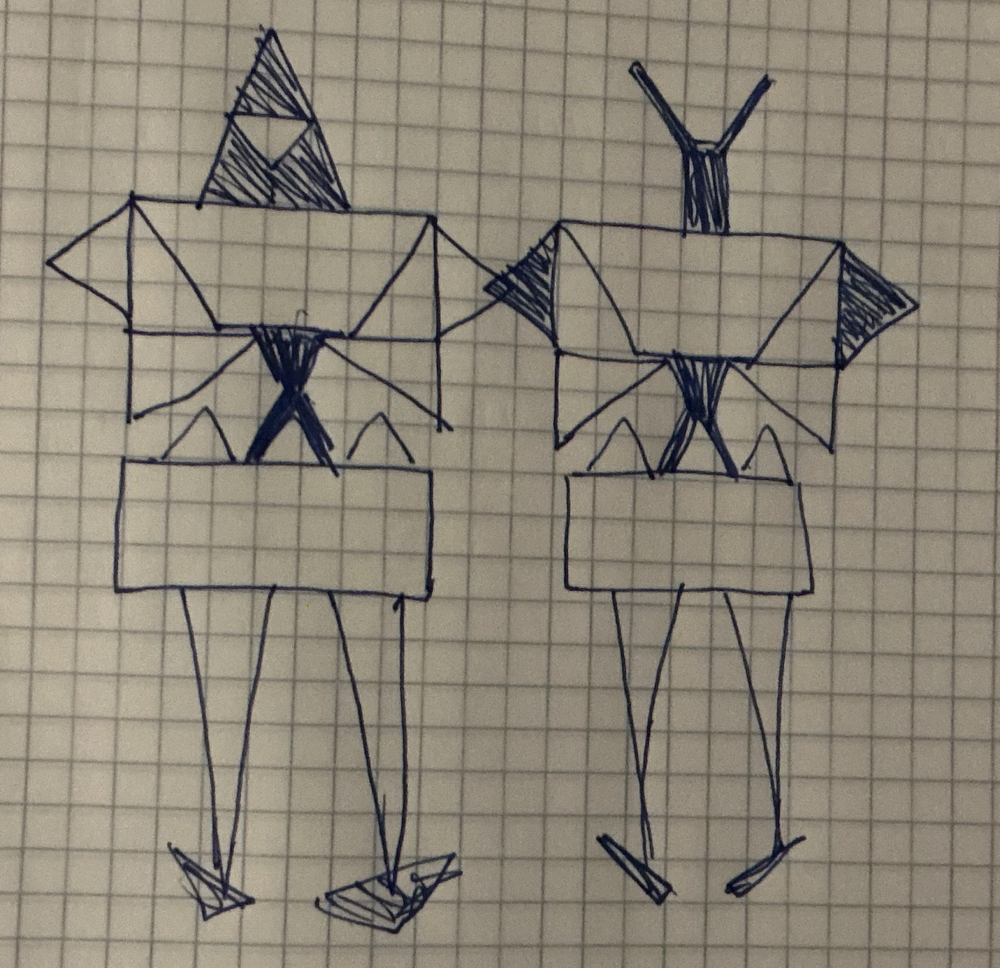

Awesomeness: "Pin the Tail on the Donkey" mini-game — click the Play button, then click where the tail belongs on the triangle donkey. Hit detection tells you if you got it right!
Reference Sketch:
